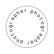
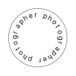

*agus-
tina
As a 'documentary' photographer, I seek to capture authentic and genuine moments with every shot.
I also approach photography from its narrative potential and give myself the freedom to create fictional sequences, where images are constructed as sketches of stories and invite exploration beyond their surface.
 


hi, i'm agus
As a passionate photographer, I've been drawn to the art form since an early age. My journey started as a self-taught enthusiast, exploring and refining my skills over the years.
Furthering my commitment, I also studied at a creative photography school for a year. Today, I continue to embrace photography's expressive power to capture authentic moments and craft compelling visual narratives.
visual stories
time stills
:)